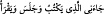

Cehennemden çıkarın!’ Bunun üzerine, kapkara kesilmiş bir halde çıkarlar; hayat
nehrine atılırlar ve selin aktığı bir yerde bitki nasıl biterse bunlar da öyle biterler.[36]
Âyet, ateşten kurtulmanın ancak îman ve Allah bilinciyle mümkün olabileceğine işâret
ediyor ki her ikisi de kalp sıfatlarındandır. Kul, nefis makamından kaçıp kalp makamına
girdiği zaman, dünyada da âhirette de her türlü elemden emîn ve sâlim olur; aksi
takdirde sürekli azap çeker.
Rivâyete göre, Bâyezîd Bistâmî (k.s.) bir gün hamama girmiş, hamamın sıcaklığından
dolayı bir nâra atınca dört yandan şu nidâyı duymuş: ‘Ey Bâyezîd! Daha dünyanın ateşi
bile başına gelmeden Bizi unuttun, Bizden yardım istemedin!’
Burada, kendi irâdesiyle seçebilecekken tedârikli olmanın ve yeis hâli gelmeden îman
etmenin makbul olduğuna, aksi takdirde işin işten geçeceğine, azapla karşılaşınca
bağırıp çağırmanın hiçbir işe yaramayacağına işâret ediliyor.
Sen cezâdan önce merhamet dile ki,
Sopa altında feryâd etmenin faydası yoktur.
Kâfire azap melekleri inerken mümin, rahmet melekleriyle musâfaha eder.
Allah Teâla buyurur ki: Ey Mûsâ! Diyeceklerime kulak ver, gerçek, Benim
söylediklerimdir: Düşkün-fakir birine karşı büyüklük taslayanları kıyâmet günü toz
şeklinde haşrederim; âlime tevâzu gösterenleri dünyada da âhirette de yüceltirim. Her
kim bir Müslümanın gizlisini-saklısını açığa çıkarmaya çalışırsa, Ben de onunkini
yetmiş katıyla ortaya dökerim; her kim bir Müslümanı alçaltmaya çalışırsa savaşta
Benimle teke tek dövüşüyor demektir. Her kim Bana îman ederse, dünyada da âhirette
de melekler kendisiyle açıkça musâfaha eder.
Allahım! Bizleri râzı olacağın şeylere muvaffak eyle!
[9]. el-Burhan’da der ki: Bu ikinci iki günün ayrıca zikredilmeyip “dört gün”
zikredilmesi, herkesin ilk anda anlayamayacağı bir nükteden dolayıdır. Şöyle ki: (
)
ifâdesi, ( )’nin sılasıdır;
(
) ifâdesi ise, (
)’ye mâtuftur. (
) cümlesi de (
)’ya mâtuftur. Oysa
böyle bir şey i’rab bakımından mümkün değildir; kelâmda böyle bir ifâdenin bulunması
câiz değildir. Şiirde ise en çirkin zarûretlerden sayılır. (
) yani “Yazan
oturdu ve okuyan bana geldi” şeklinde bir ifâde kullanılamaz. Zîrâ ism-i mevsûlün ( )
sılasıyla (
) ona mâtuf olan şeyin ( ) arasına başka bir şey ( ) sokulamaz. Bu
mümkün olmadığına göre, ifâdenin sahih olacağı bir fiilin gizlenmesi kaçınılmaz
olacaktır. Öyle ise (
)’den sonra, bir (
) cümlesi daha düşünülecek demektir:
(
); yani yeri yaratan ve oranın üzerine sâbit dağlar
yerleştiren...” şeklindedir. Böylece hepsi dört günde gerçekleşmiş olacaktır.